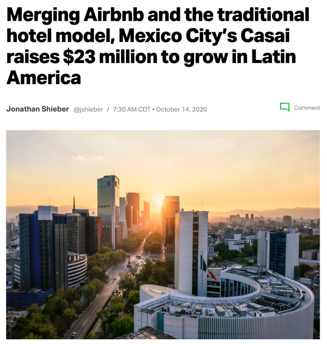
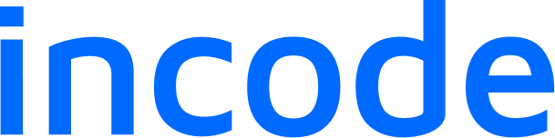

A decade making complex, high-stakes products feel effortless, and building the teams that keep them that way.
Selected companies
Backed by
I turn scattered signals into one aligned direction — research, facilitation, a point of view.
I refine rough into resilient — products people trust under real-world stakes.
I build systems, teams and culture — value that keeps paying out after I leave.
I scale design orgs that can run without me (the ultimate stress test).
In money and identity, trust is the product — legibility, honesty, graceful failure.
Clear POV, pressure-tested by the room. The best decision wins; everyone owns it.
If it only works when I’m in the room, I’ve failed.
Real products in real hands beat perfect decks.
The messiest rooms are where design earns its seat.
Measure success by who I raise.
Led consumer design as Bitso was expanding to new markets.
Hired to fix the fundamentals — built a booking site, a concierge app, a research practice, and a team to run it.

Design leadership for enterprise platforms while figuring out where design sits in the AI tectonic shift.

By building the product, and the team that keeps earning it.